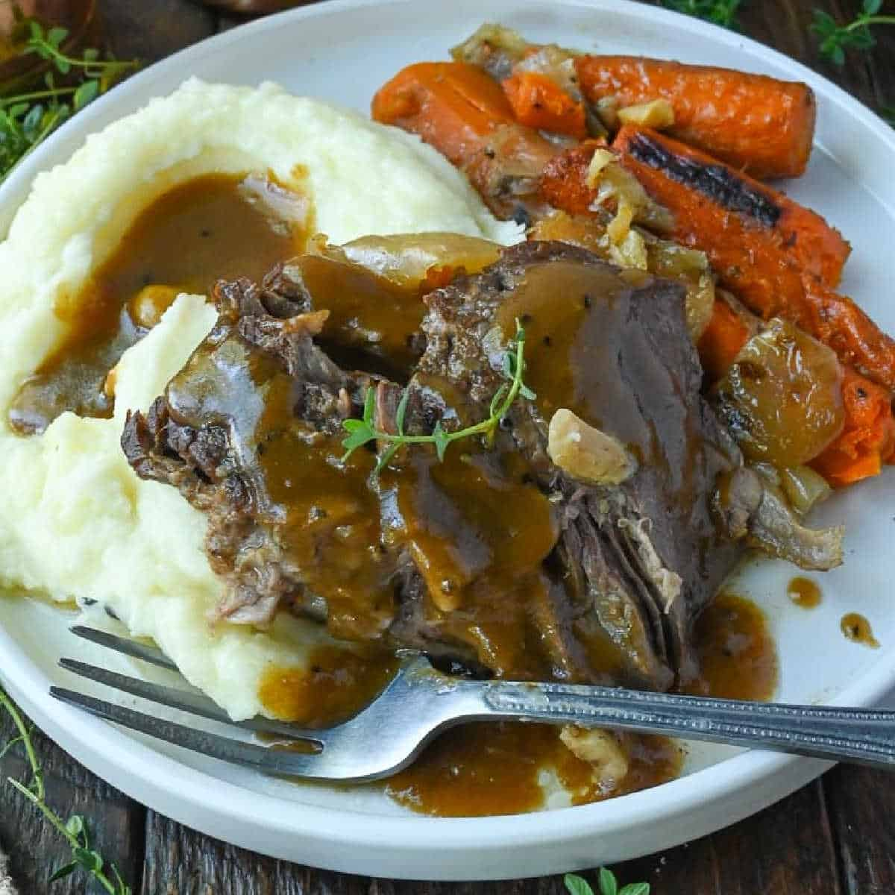

Dad's Crockpot Pot Roast

Roast
- 2-3 lbs beef rump roast
- Baby carrots (amount as desired)
- 1 2oz packet Lipton Onion soup mix
- Drippings from roast
- Water
- Cornstarch
- Desired seasonings
- Potatoes
- Butter
- Sour Cream
- Buttermilk
- Salt and pepper
Gravy
Mashed Potatoes
Roast: Add roast, baby carrots, and onion soup packet to crockpot with a splash of water. Cook on low for about 8 hours, or until done. (Note: if you prefer firmer carrots, you may want to let the roast cook for a few hours before adding carrots. I usually prefer soft carrots so I add them at the beginning.)
Gravy: After roast is done, pour the cooking juices from your pot roast into a medium saucepan. Add extra beef stock or water if you have less than 2 to 3 cups of liquid.
In a small cup or bowl, whisk the cornstarch (1 tablespoon for each cup of liquid in the gravy) with 1 cup of cold water or broth until completely smooth and free of lumps.
Bring the strained drippings in your saucepan to a gentle simmer over medium-high heat and slowly pour the cornstarch slurry into the simmering liquid while whisking constantly to prevent lumps.
Let the gravy simmer for 2 to 3 minutes until it thickens to your preferred consistency. Taste and add salt, black pepper, and any other seasonings desired, sometimes Dad adds Weber burger seasoning.
Mashed Potatoes: Put a large pot of water on the stove to boil. Peel desired number of potatoes. Dice into small cubes and add to boiling water. Cook until soft when poked with a fork.
Drain potatoes and add to a KitchenAid with a whisk attachment or electric mixer.
Add butter, sour cream, buttermilk, salt, and pepper to taste and beat until fluffy. Note: Mashed potatoes will get cold pretty quickly so you may want to put them in an oven on keep warm (170-200 degrees) if you aren't serving them immediately.